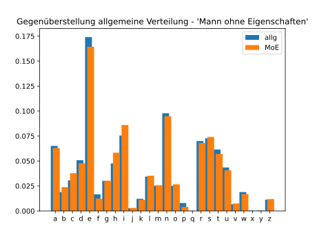
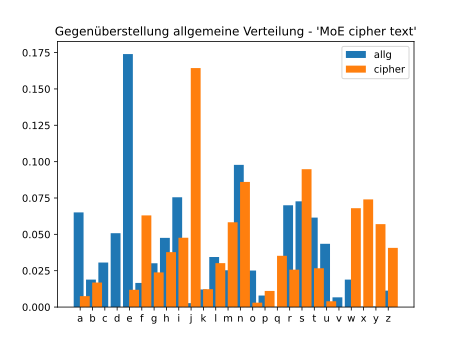
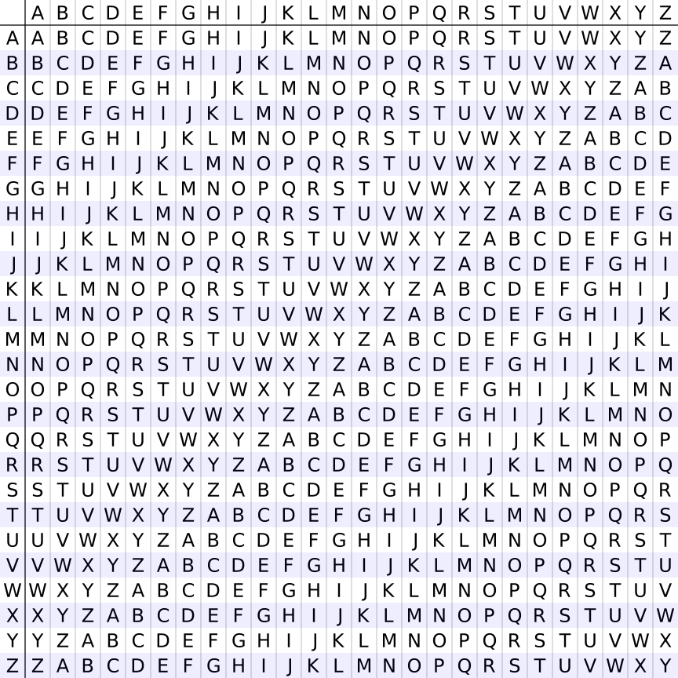
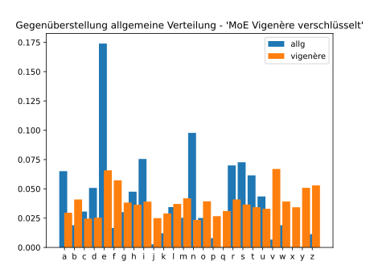

Polyalphabetische Chiffren#
Schwächen monoalphabetischer Chiffren#
Bereits im 9. Jahrhundert wurde im islamischen Raum die grosse Schwachstelle monoalphabetischer Chiffren (Caesar-Chiffre) erkannt. Die Verteilung der Buchstaben folgt in jeder Sprache einem spezifischen aber konstanten Muster. Für die deutsche Sprache ist die Verteilung der folgenden Tabelle zu entnehmen.
Buchstabe |
relative Häufigkeit |
Buchstabe |
relative Häufigkeit |
Buchstabe |
relative Häufigkeit |
|---|---|---|---|---|---|
a |
0.0651 |
l |
0.0344 |
w |
0.0189 |
b |
0.0189 |
m |
0.0253 |
x |
0.0003 |
c |
0.0306 |
n |
0.0978 |
y |
0.0004 |
d |
0.0508 |
o |
0.0251 |
z |
0.0113 |
e |
0.1740 |
p |
0.0079 |
||
f |
0.0166 |
q |
0.0002 |
||
g |
0.0301 |
r |
0.0700 |
||
h |
0.0476 |
s |
0.0727 |
||
i |
0.0755 |
t |
0.0615 |
||
j |
0.0027 |
u |
0.0435 |
||
k |
0.0121 |
v |
0.0067 |
Um zu zeigen, dass dies sich mit (längeren) Texten deckt, wurde ein Kapitel aus dem Roman ‘Der Mann ohne Eigenschaften’ von Robert Musil ausgewertet. Die sich aus dieser Auswertung ergebende Verteilung wird in der folgenden Grafik der Verteilung aus der Tabelle gegenübergestellt.

Die Grafik zeigt, dass bei einer Textlänge von 13’343 Buchstaben die Verteilung in einem literarischen Text nahezu identisch ist, mit der allgemeinen Häufigkeitsverteilung in der deutschen Sprache.
Die nächste Grafik zeigt, was mit der Verteilung der Buchstaben geschieht, wenn der gleiche Text mit einer Caesar-Chiffre verschlüsselt worden ist.

Es ist deutlich zu erkennen, dass die Verteilung dem gleichen Muster folgt - verschoben um fünf Positionen. Diese Auswertung ermöglicht die Entschlüsselung des Textes, ohne alle möglichen Schlüsselalphabete durchzuprobieren.
Vigenère Chiffre#
Bei der Vigenère Chiffre handelt es sich um eine polyalphabetische Chiffre. Das Verfahren ist nach Blaise de Vigenère (1523 - 1596) benannt. polyalphabetisch heisst, dass zur Verschlüsselung nicht eine Verschiebung vorgenommen wird sondern - nach jedem Buchstaben wechselnd - mehrere Verschiebungen vorgenommen werden.
Um das zu erreichen, verwendet man ein sogenanntes Vigenère-Quadrat wie unten abgebildet.

Für die Verschlüsselung eines Klartextes braucht das Vigenère Verfahren ein Schlüsselwort. Das Schlüsselwort sollte möglichst lang sein. Das folgende Beispiel soll zeigen, wie das Vigenère Verfahren funktioniert. Der zu verschlüsselnde Klartext lautet ‘Kryptologie ist spannend’ und der Schlüssel ‘Buelrain’. Als Hilfestellung werden Text und Schlüssel in einer Tabelle dargestellt.
kryptologieistspannend
buelrainbuelrainbuelra
Der Schlüssel wir dabei ohne Wortabstand so oft wiederholt, bis die
Buchstabenfolge des Schlüssels gleich lang ist, wie die Buchstabenfolge, welche
zu verschlüsseln ist.
Als nächstes wird der zu verschlüsselnde Buchstabe in der Kopfzeile des Vigenère
Quadrates gesucht. Damit wird die Spalte mit dem verschobenen Alphabet
identifiziert. Der chiffrierte Buchstaben ergibt sich, indem in der Spalte mit
den Zeilenköpfen der unter dem zu chiffrierenden Buchstaben befindliche
Buchstabe des Schlüssels gesucht wird. Der Schnittpunkt der Zeile mit der vorher
gefundenen Spalte entspricht dem chiffrierten Buchstaben.
kryptologieistspannend
buelrainbuelrainbuelra
LLCAKOTBHCITJTACBHRPED
Alternativ kann eine Verschlüsselung mit der Vigenère Chiffre auch mit modularer Arithmetik umgesetzt werde. Dazu wird jedem Buchstaben ein Zahlenwert nach dem Muster \(a = 0, b = 1, ... , z = 25\) zugewiesen. Die Verschlüsselung erfolgt anschliessend nach der ‘Formel’ \(C_i = (P_i + K_i) mod 26\) Wobei die Buchstaben \(C\) für den chiffrierten Text, \(P\) für den Klartext (Englisch plain text) und \(K\) für den Schlüssel (Englisch key) stehen. Der Index \(_i\) steht für den \(i\)-ten Buchstaben in der Textfolge.
Das obige Beispiel stellt sich dann folgendermassen dar:
k r y p t o l o g i e i s t s p a n n e n d
10 17 24 15 19 14 11 14 06 08 04 08 18 19 18 15 00 13 13 04 13 03
b u e l r a i n b u e l r a i n b u e l r a
01 20 04 11 17 00 08 13 01 20 04 11 17 00 08 13 01 20 04 11 17 00
11 37 28 26 36 14 19 27 07 28 08 19 35 19 26 28 01 33 17 15 30 03
11 11 02 00 10 14 19 01 07 02 08 19 09 19 00 02 01 07 17 15 04 03
L L C A K O T B H C I T J T A C B H R P E D
Für die Entschlüsselung wird die ‘Formel’ folgendermassen umgekehrt: \(P_i = (C_i - K_i + 26) mod 26\). Die Addition von 26 in der Klammer erfolgt, um negative Zahlen zu vermeiden.
Wie sich die Vigenère Verschlüsselung auf die Verteilung der Buchstaben auswirkt, kann untenstehender Grafik entnommen werden.

Wie unschwer zu erkennen ist, stellt sich die Verteilung der Buchstaben in einem polyalphabetisch verschlüsselten Text deutlich anders dar, als dies in normalen Text der Fall ist. Die Vigenère Chiffre galt daher während ungefähr 300 Jahren als ‘la chiffre indéchiffrable’.
Ein Spezialfall der Vigenère Chiffre ist tatsächlich nicht zu entschlüsseln. Das ist dann der Fall, wenn der Schlüssel länger ist als der Klartext. Man spricht in diesem Fall vom One-Time Pad.